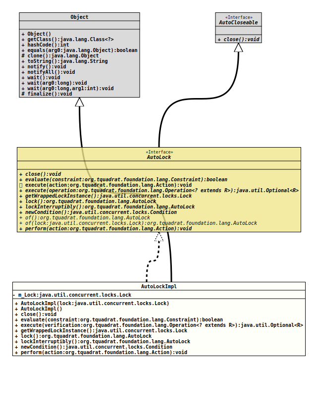

Module org.tquadrat.foundation.base
Class AutoLockImpl
java.lang.Object
org.tquadrat.foundation.lang.internal.AutoLockImpl
- All Implemented Interfaces:
AutoCloseable,AutoLock
@ClassVersion(sourceVersion="$Id: AutoLockImpl.java 944 2021-12-21 21:56:24Z tquadrat $")
@API(status=INTERNAL,
since="0.1.0")
public final class AutoLockImpl
extends Object
implements AutoLock
The implementation of
AutoLockImpl.- Author:
- Thomas Thrien (thomas.thrien@tquadrat.org)
- Version:
- $Id: AutoLockImpl.java 944 2021-12-21 21:56:24Z tquadrat $
- Since:
- 0.1.0
- See Also:
- UML Diagram
-

UML Diagram for "org.tquadrat.foundation.lang.internal.AutoLockImpl"
{kind=link}
-
Nested Class Summary
Nested classes/interfaces inherited from interface org.tquadrat.foundation.lang.AutoLock
AutoLock.ExecutionFailedException -
Field Summary
FieldsFields inherited from interface org.tquadrat.foundation.lang.AutoLock
EMPTY_AUTOLOCK_ARRAY -
Constructor Summary
ConstructorsConstructorDescriptionCreates a newAutoLockImplinstance with an internal lock object.AutoLockImpl(Lock lock) Creates a newAutoLockImplinstance. -
Method Summary
Modifier and TypeMethodDescriptionfinal voidclose()voidExecutes the given action after obtaining the lock.<R> Optional<R>Executes the given operation after obtaining the lock, and returns its result.final LockReturns the wrapped lock.final AutoLocklock()final AutoLockCallslockInterruptibly()on the wrappedLockinstance.final Condition
-
Field Details
-
m_Lock
The wrapped lock.
-
-
Constructor Details
-
AutoLockImpl
Creates a newAutoLockImplinstance.- Parameters:
lock- The wrapped lock.
-
AutoLockImpl
public AutoLockImpl()Creates a newAutoLockImplinstance with an internal lock object.
-
-
Method Details
-
close
- Specified by:
closein interfaceAutoCloseable- Specified by:
closein interfaceAutoLock
-
execute
Executes the given action after obtaining the lock.- Specified by:
executein interfaceAutoLock- Parameters:
action- The action.- Throws:
AutoLock.ExecutionFailedException- The action failed for some reason.
-
execute
public <R> Optional<R> execute(Operation<? extends R> operation) throws AutoLock.ExecutionFailedException Executes the given operation after obtaining the lock, and returns its result.- Specified by:
executein interfaceAutoLock- Type Parameters:
R- The type of the operation's result.- Parameters:
operation- The operation.- Returns:
- An instance of
Optionalthat holds the result of the operation. - Throws:
AutoLock.ExecutionFailedException- The operation failed for some reason.
-
getWrappedLockInstance
Returns the wrapped lock.- Specified by:
getWrappedLockInstancein interfaceAutoLock- Returns:
- The wrapped lock.
-
lock
-
lockInterruptibly
CallslockInterruptibly()on the wrappedLockinstance.- Specified by:
lockInterruptiblyin interfaceAutoLock- Returns:
- The reference to this
AutoLockinstance. - Throws:
InterruptedException- The current thread was interrupted while acquiring the lock (and interruption of lock acquisition is supported).
-
newCondition
Returns a newConditioninstance that is bound to the instance ofLockthat is wrapped by thisAutoLockinstance.- Specified by:
newConditionin interfaceAutoLock- Returns:
- The new condition.
- See Also:
-